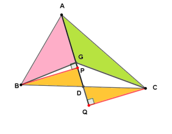

G6 - Centrul de greutate al unui triunghi Se numește mediană a unui triunghi segmentul care unește unul dintre vârfurile triunghiului cu mijlocul laturii opuse acestuia.
Medianele unui triunghi sunt concurente . Punctul de intersecție al medianelor se notează cu G și se numește centru de greutate .
Layer 1 A B C F S E G D U T Centrul de greutate al unui triunghi este situat pe fiecare mediană, la două
treimi de vârful pe care îl conține și la o treime de mijlocul laturii opuse
acestuia.
Pentru medianele A D , B E , C F AD, BE, CF A D , BE , CF
S S S A G AG A G
T T T B G BG BG
U U U C G CG CG
A S = S G = G D AS = SG = GD A S = SG = G D A G = 2 3 A D AG = \frac{2}{3} AD A G = 3 2 A D G D = 1 3 A D GD = \frac{1}{3} AD G D = 3 1 A D
B T = T G = G E BT = TG = GE BT = TG = GE B G = 2 3 B E BG = \frac{2}{3} BE BG = 3 2 BE G E = 1 3 B E GE = \frac{1}{3} BE GE = 3 1 BE
C U = U G = G F CU = UG = GF C U = U G = GF C G = 2 3 C F CG = \frac{2}{3} CF CG = 3 2 CF G F = 1 3 C F GF = \frac{1}{3} CF GF = 3 1 CF
Exemple de Aplicații

Problema 1
În triunghiul A B C ABC A BC A D AD A D G G G
a) Dacă A D = 27 AD = 27 A D = 27 A G AG A G G D GD G D
b) Dacă A G = 6 AG = 6 A G = 6 A D AD A D G D GD G D
Rezolvare
a)
A G = 2 3 A D = 2 3 ⋅ 27 = 18 cm AG = \frac{2}{3} AD = \frac{2}{3} \cdot 27 = 18\text{ cm} A G = 3 2 A D = 3 2 ⋅ 27 = 18 cm G D = 1 3 A D = 1 3 ⋅ 27 = 9 cm GD = \frac{1}{3} AD = \frac{1}{3} \cdot 27 = 9\text{ cm} G D = 3 1 A D = 3 1 ⋅ 27 = 9 cm b)
A G = 2 3 A D ⇒ 6 = 2 3 A D AG = \frac{2}{3} AD \Rightarrow 6 = \frac{2}{3} AD A G = 3 2 A D ⇒ 6 = 3 2 A D A D = 6 : 2 3 = 6 ⋅ 3 2 = 9 cm AD = 6 : \frac{2}{3} = 6 \cdot \frac{3}{2} = 9\text{ cm} A D = 6 : 3 2 = 6 ⋅ 2 3 = 9 cm Problema 2
Dacă G G G A B C ABC A BC A B G ABG A BG B C G BCG BCG A C G ACG A CG
Rezolvare
Construim B P ⊥ A G BP \perp AG BP ⊥ A G C Q ⊥ A G CQ \perp AG CQ ⊥ A G P , Q ∈ A G P, Q \in AG P , Q ∈ A G
Aria triunghiurilor este:
A A B G = A G ⋅ B P 2 , A A C G = A G ⋅ C Q 2 A_{ABG} = \frac{AG \cdot BP}{2}, \qquad A_{ACG} = \frac{AG \cdot CQ}{2} A A BG = 2 A G ⋅ BP , A A CG = 2 A G ⋅ CQ Comparăm triunghiurile dreptunghice B P D BPD BP D C Q D CQD CQ D
B D = D C BD = DC B D = D C A D AD A D ∠ B D P ≡ ∠ C D Q \angle BDP \equiv \angle CDQ ∠ B D P ≡ ∠ C D Q
De aici rezultă, prin criteriul I.U., că △ B P D ≡ △ C Q D \triangle BPD \equiv \triangle CQD △ BP D ≡ △ CQ D
B P = C Q BP = CQ BP = CQ Așadar:
A A B G = A A C G A_{ABG} = A_{ACG} A A BG = A A CG Similar se arată că A A B G = A B C G A_{ABG} = A_{BCG} A A BG = A BCG
Prin urmare:
A A B G = A A C G = A B C G A_{ABG} = A_{ACG} = A_{BCG} A A BG = A A CG = A BCG